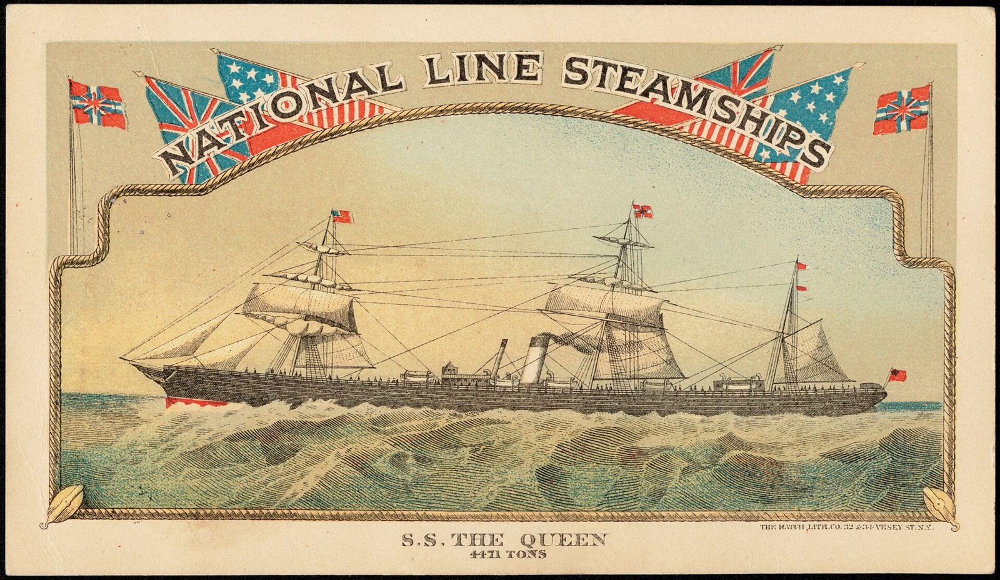
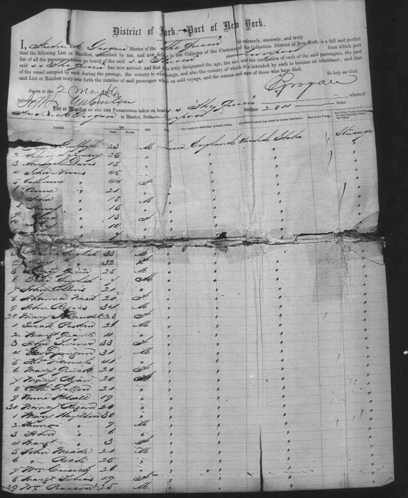

Chapter 6
The crossing
1866
The times: how Danes reached America. Danish emigrants of the 1860s left few traces at home: the Copenhagen police began registering emigrants only in 1868–69.1 Most who left Jutland went south to Hamburg or west across the North Sea to Hull. Steamers made the crossing to Hull in three or four days. From there emigrant trains ran about 140 miles through Leeds and Manchester to Liverpool, a journey of up to six hours, and in Liverpool emigrants waited, sometimes for days or weeks, for a ship.2 By then most crossed by steam. In the 1860s a crossing under sail took on average about 39 days, by steam about 15, and steam was safer: between 1863 and 1869, 0.33 per cent of emigrants on sailing ships died on the way, against 0.07 per cent on steamers.3
Castle Garden. At New York, emigrants passed through the Emigrant Landing Depot at Castle Garden, on the southern tip of Manhattan, which handled about three quarters of all immigrants to the United States between 1855 and 1890. At the registry desk they gave their names and where they were going. The depot had a money exchange, railroad ticket offices, a baggage room and doctors, and it kept out the "runners" who preyed on new arrivals. A Norwegian who passed through remembered the great hall as so loud "that one had to shout into the ear of the listener".4
It is not certain how or when Niels Christian crossed. He was still at Terndrup on 2 April 1866, when he signed away his share of the farm, and his travel money came from Kirsten Marie's uncle, Anders Stephansen. The next firm record of him is his marriage in Washington County, Nebraska, in February 1868 (see Appendix C). Two passenger lists from the spring of 1866 each name a man who could be him: one ship landed at New York, the other at Quebec. Both routes began the same way for a Dane from Jutland: a North Sea crossing to Hull of three or four days, a train to Liverpool, and then a wait of days or weeks for a ship.2
First possibility: The Queen, Liverpool to New York, May 1866
The ship. The Queen was almost new. Built in 1865 by Laird Brothers at Birkenhead for the National Line, she was an iron screw steamer of 3,412 gross tons and 381 feet, with a clipper bow, one funnel and three masts rigged for sail, and a speed of about 10 knots. The National Line had been founded in Liverpool in 1863 and ran from Liverpool by way of Queenstown in Ireland to New York, carrying mostly steerage passengers. By 1870 it was advertising in Norway that its ships carried doctors, Norwegian interpreters and stewards, and that 20,000 Scandinavians would cross with it that year.3


The passenger list. Her list for the voyage that reached New York on 2 May 1866, sworn by her master, Frederick Grogan, includes passenger no. 884: "Niels Olsen", 44, labourer, in steerage. He is listed among a group of Scandinavians, including Johanne Nielsen, Peder Jensen [?] and Ane Petersen, and like the passengers around him he is entered as from Germany. The clerk simply ran one country down the page: on another page of the same list, Irish passengers who had boarded at Queenstown are all entered as English. The age fits, since Niels Christian turned 45 only on 1 June 1866. So does the date. The ship arrived exactly a month after he signed away his share of the farm, which leaves time for the journey to Liverpool and a crossing of 12 to 14 days. The list gives no home parish, and Niels Olsen was a common name, so the identification is possible but not certain.4


A dangerous spring. Cholera was abroad that spring. It broke out on two other National Line ships that left Liverpool shortly before The Queen. The England, which sailed on 28 March with about 1,200 passengers, reached Halifax with the disease on board, and well over a hundred died there in quarantine. The Virginia, which sailed on 4 April, lost dozens of passengers and was held in quarantine in New York's lower bay. Nothing found so far suggests that The Queen was affected.3
Second possibility: The Moravian, Liverpool to Quebec, June 1866
Canada's incoming passenger lists record a "Nils Olsen", 46, among the passengers of the Moravian, a steamer of the Montreal Ocean Steamship Company (the Allan Line), which landed at Quebec in June 1866. His age is a year or two too high, since Niels Christian turned 45 only on 1 June 1866. Like the New York list, this one gives no home parish. (Canada, Incoming Passenger Lists, 1865–1935.)
Weighing the two
Neither list settles the question. The Queen fits the timing most closely: she reached New York exactly a month after he signed his renunciation. The Moravian leaves a more comfortable interval after 2 April. A fellow passenger from Himmerland later found near him in Nebraska, or his naturalisation papers, which sometimes give the port and date of arrival, could decide between them.
Going west. From New York the way west led by rail to Chicago and on across Iowa. In the spring of 1866 the railroad from Chicago towards the Missouri reached only a little beyond Boone, in central Iowa; it arrived at Council Bluffs, across the river from Omaha, in January 1867. The last stretch was by stagecoach or wagon, or by river steamer. How and when Niels Christian made the journey is not known, but by February 1868 he was in Washington County, Nebraska, where he married, and by early 1869 he was writing to Kirsten Marie from New York Creek.4
Click here for notesHide notes4 notes
Abbreviation: DFT = Damborg family tree, "20130316 Damborg", Ancestry.com Member Trees, GEDCOM export of 26 May 2026, including its facts, research notes and attached images. Short titles refer to the Works Cited.
- 1FamilySearch Research Wiki, “Denmark Emigration and Immigration” (about 60 emigrants a year in 1820–1850; increase in the 1870s, peak in the early 1880s; ports including Copenhagen and Hamburg; Copenhagen Police emigration records from 1869). ↩
- 2Norway Heritage, “Migration from Northern Europe to America via the Port of Hull, 1848–1914”; BYU Studies, "Latter-day Saint Scandinavian Migration through Hull, England, 1852–1894" (the North Sea crossing; the 140-mile train journey to Liverpool, up to six hours; waits in Liverpool of days to weeks before 1869). ↩a ↩b
- 3Hatton, “Time on the Crossing” (steam on emigrant routes from 1856; median voyage by steam from 1864; average 38.8 days by sail and 14.9 by steam in the 1860s; passenger death rates 1863–69 of 0.33 and 0.07 per cent); Lex.dk (Danmarkshistorien), “Hedeopdyrkning, ca. 1750–1950” (Hedeselskabet founded 1866 under Enrico Dalgas; the motto after 1864). Norway Heritage, "The Queen, National Line" (built 1865 by Laird Bros, Birkenhead; 3,412 gross tons; 381.1 ft; iron, single screw, 10 knots; one funnel, three masts) and "National Line" fleet list (1870 advertisement: doctors, Norwegian interpreters and stewards; about 20,000 Scandinavians); "National Line," Wikipedia (founded 1863); Old Mersey Times, "Cholera on board the steamships England and Virginia 1866" (England sailed 28 March 1866, quarantine at Halifax; Virginia sailed 4 April 1866, quarantine in the lower bay of New York). ↩a ↩b ↩c
- 4DFT, Niels Christian Olesen: emigration fact 1866 and research timeline (“Han rejser alene og underskriver sig nu kun som Niels Christian Olesen”). Passenger list of s.s. The Queen, Liverpool and Queenstown to New York, sworn 2 May 1866 by Frederick Grogan, master (burden 2,811 tons), passenger no. 884, Niels Olsen, 44, labourer, steerage, entered with the passengers around him as from Germany: New York, Passenger Lists, 1820–1920 (FamilySearch), from NARA M237, roll 264, image 253; wrapper "Str. The Queen, May 2/66, L'pool", no. 397 (images supplied by the family). On Castle Garden: National Park Service, "Castle Garden Emigrant Depot." On the railroad: "Cedar Rapids and Missouri River Railroad," Wikipedia (reached Council Bluffs in January 1867); Boone County IAGenWeb, "Railroad history" (track to Boone, 1864–65); Historical Society of Pottawattamie County, "Railroads in Council Bluffs" (stage lines before the railroad). ↩a ↩b ↩c